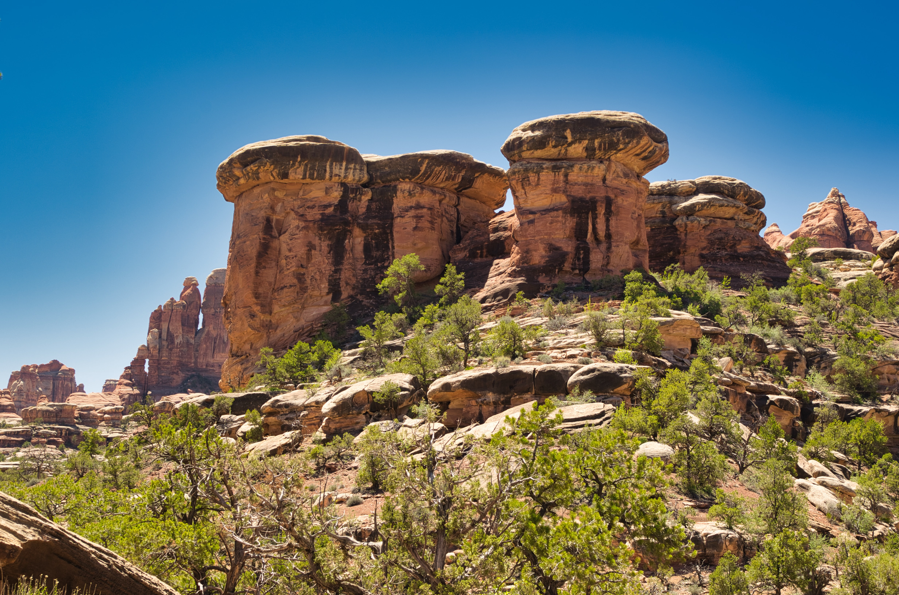
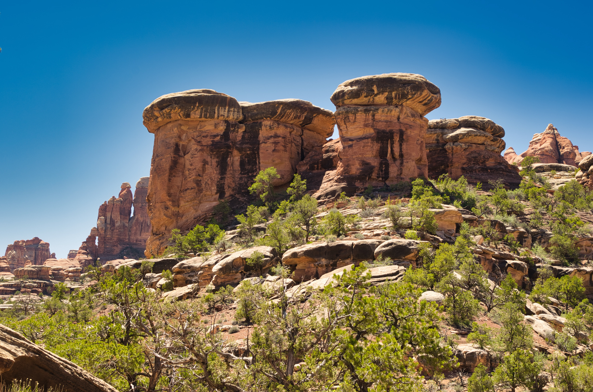

Canyonlands National Park preserves 337,598 acres of colorful canyons, mesas, buttes, fins, arches, and spires in the heart of southeast Utah's high desert. Water and gravity have been the prime architects of this land, sculpting layers of rock into the rugged landscape you see today. Canyonlands preserves the natural beauty and human history throughout its four districts, which are divided by the Green and Colorado rivers. While the districts share a primitive desert atmosphere, each retains its own character and offers different opportunities for exploration and adventure.